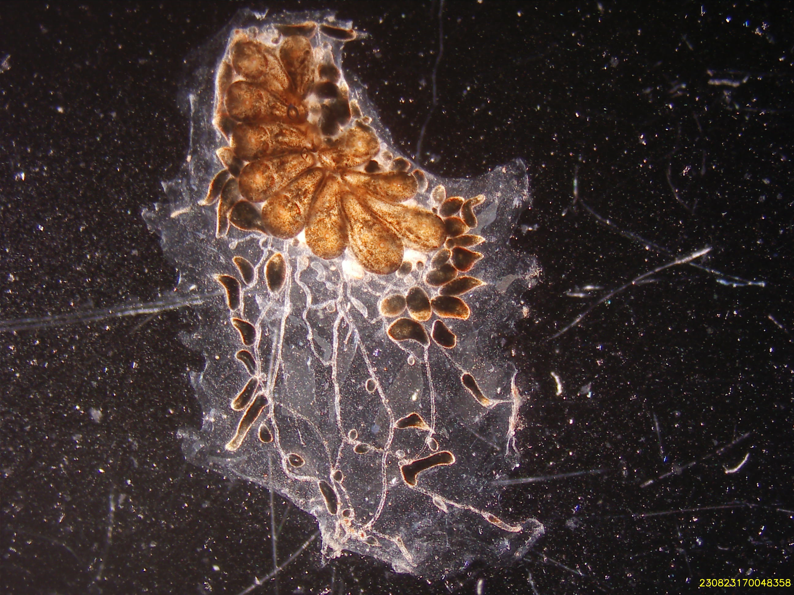
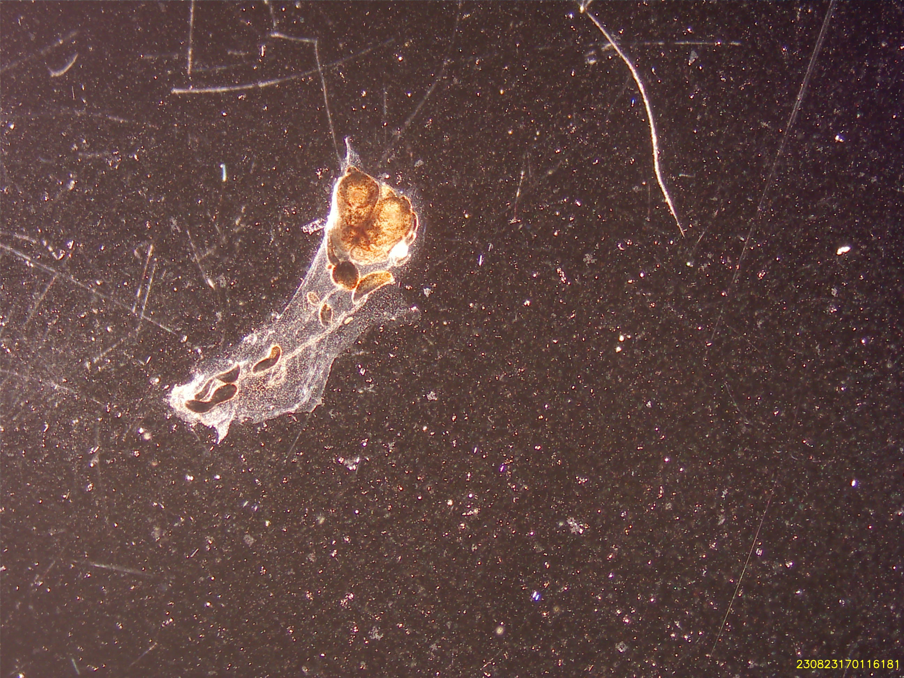
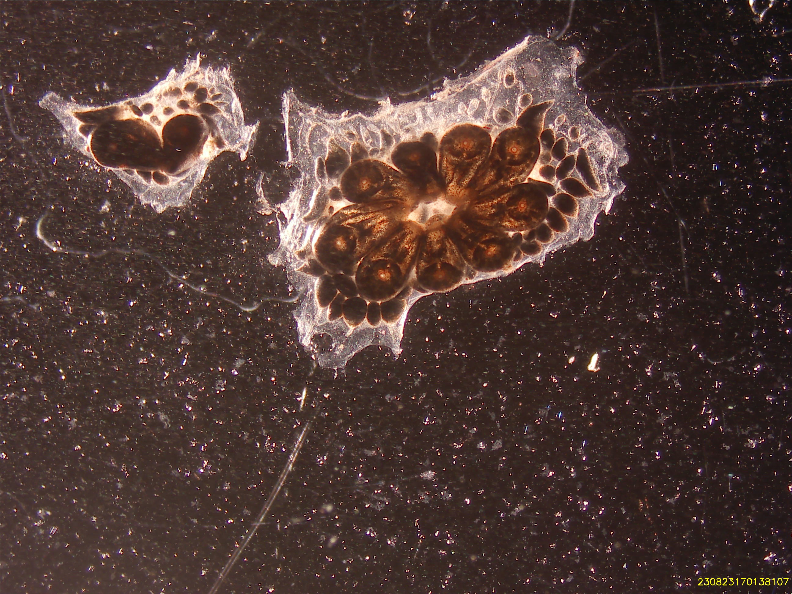
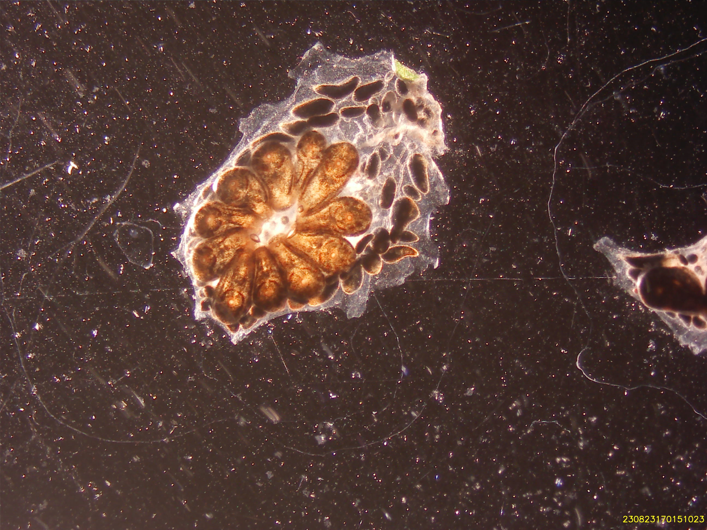
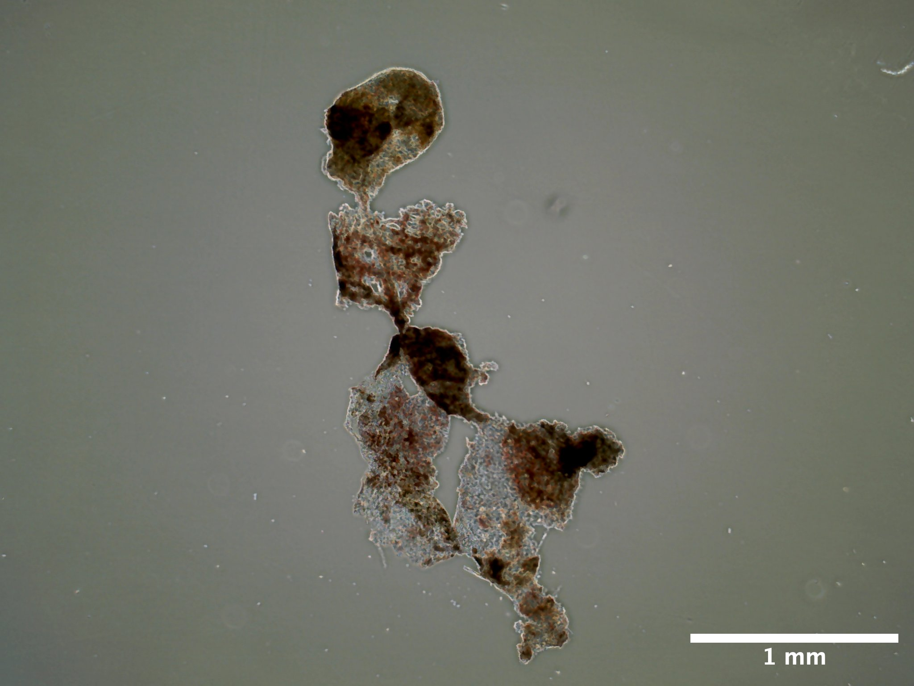
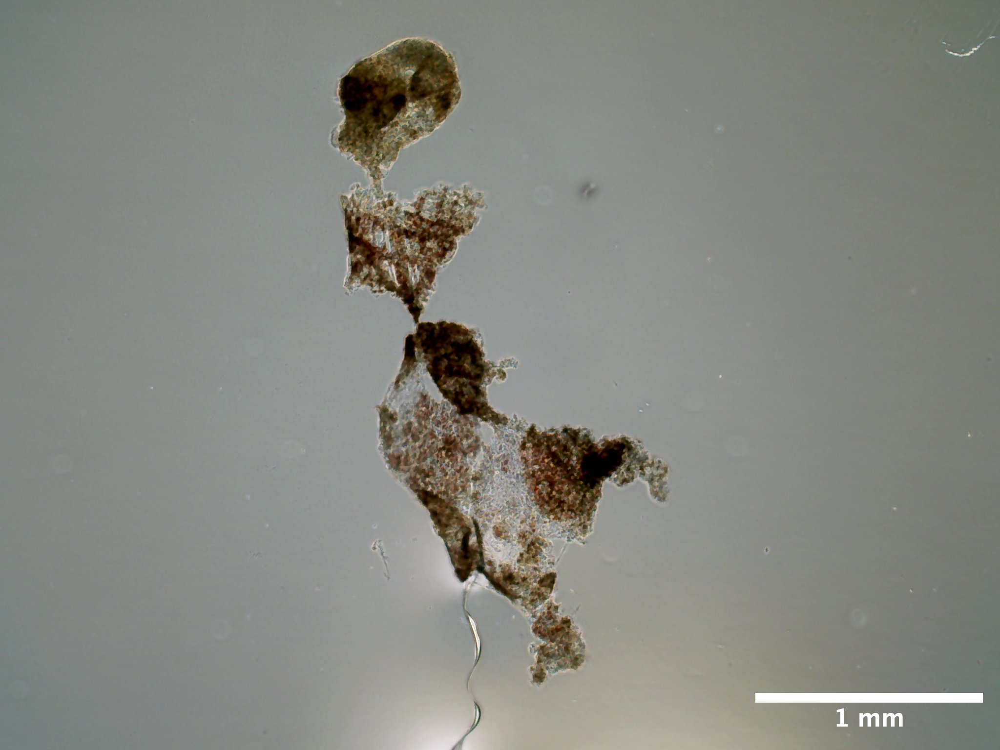
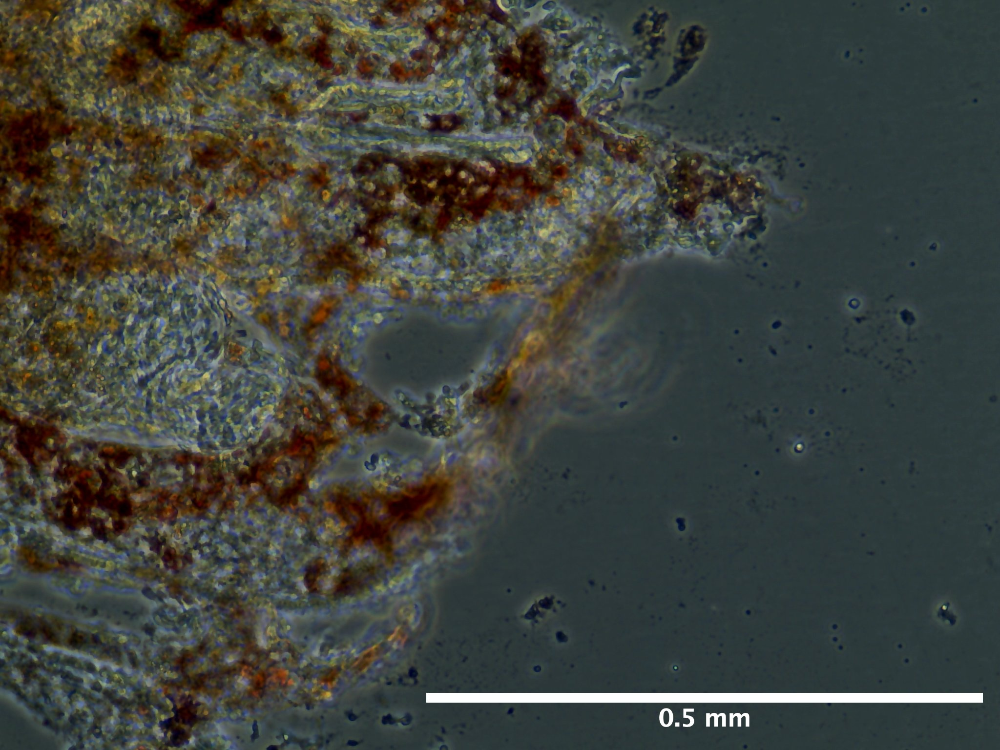
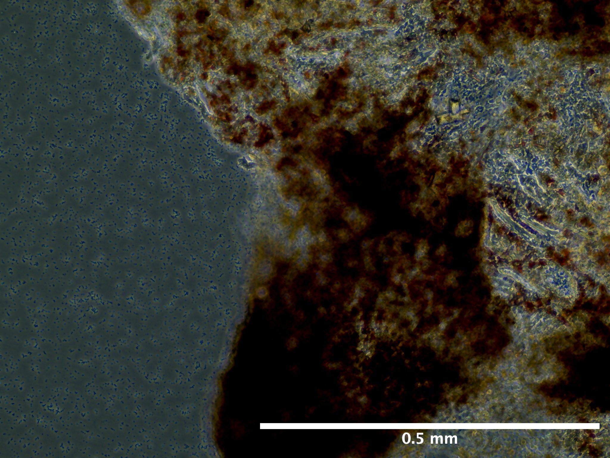

Here I both describe the procedure that occurred for epithelial tissue isolation from Botryllus schlosseri for trial 16 and maintain this document as a living log for further updates regarding those cultures.
General Information
Date and Time
August 22, 2023
- Preparation of epithelial isolation began on 08/22/23 with the quarantine period. Individual S085C001 was set in approximately 60 mL of Autoclaved Artificial Seawater - Gentamicin (0.05%).
August 23, 2023: 0 days post seeding (dps)
S085C001 was dissected for parental zooids on 08/23/23
Zooids were transferred to a 1 mL aliqout of tunicate culture media (TCM) in batches of 10 for all 25 zooids.
Zooid tissue was seeded at approximately 5 - 6:50 PM.
4 pieces of tissue out of 18 unadhered after seeding
Rinsed off all zooid pieces with 2 mL of TCM wash before allowing tissue to adhere.
Flask placed in incubator immediately after seeding.
August 24, 2023: 1 dps
Source and Handling of Starting Material
- All tunicates when collected from marina are transported to UWT in 500 mL Nalgene polycarbonate jars filled completely with local marina water. Jars are placed in a cooler to maintain temperature for 30 minute drive back to UWT (from City of De Moines Marina).
- Upon arrival, tunicates are removed from mussel using a razor blade or kept with substrate and tied to 3’’ x 2’’ x 1.2 mm glass slide using cotton thread. Tunicates are immediately placed in UWT recirculating artificial seawater system (16 C, 27 PPT).
- Tunicates are fed every other day (MWF) a mix of commercially available phytoplankton and roti-rich.
Colony Information At Dissection 08/22/23
| colony_id | establishment_date | sampling_location | stage | zooid_num | health_score | |
|---|---|---|---|---|---|---|
| S085C001 | 07/26/2023 | De Moines Marina (47.44, -122.34) | B2 | 35 | 10/10 |
Whole animal




Cell Isolation Technique
- Epithelial cell isolation occurred mechanically with the use of a pair of 28 G insulin needles.
Culture Medium Composition
Tunicate Culture Media:
- 24.5 mL Basal L-15 Media (formulated and initially filtered on 06/12/23, re-filtered after cracking container on 08/21/23)
5 % FBS
2% Penicillin-Streptomycin (stock = 100 U)
11 mL concentrated, filtered artificial seawater (stock = 75 PPT)
500 uL HEPES buffer (stock = 20 mM/L)
50 uL Amphotericin B (stock = 250 ug/mL)
Description of Culture Vessels and Substrates
- Corning 25 cm2 Cell Culture Flask, Canted Neck, Tissue Culture Treated, Nonpyrogenic (Cat. No. 430639).
- No additional coating with substrate.
Temperature and Environment
08/23/23: UW Tacoma, Science Building (SCI) incubator.
- Temperature: 18 C
- Light: 0
- Humidity: 89%
08/24/23: UW Tacoma, Science Building (SCI) incubator.
- Temperature: 18 C
- Light: 0
- Humidity:
08/25/23: UW Tacoma, Science Building (SCI) incubator.
- Temperature: 18 C
- Light: 0
- Humidity: 91%
Tissue Seeding Density
08/23/23: 0.72 parental zooids / cm2
18 zooids in flask
09/13/23: 0.60 parental zooids / cm2
15 zooids in flask
Observations and Growth Monitoring
No growth observed at 2 dps
No growth observed at 9 dps
- Observation of minor decay
No growth observed at 22 dps
- Tissue decay observed across most tissue pieces




Viability and Proliferation
At 22 dps observation of a large amount of cellular debris and change in pigmentation of tissue, similar to the color of decaying tissue in vivo
At 22 dps, no change in cell density.
Media Changes and Additions
- 08/23/23 (0 dps): Added 1 mL of media at 0 dps
- 08/25/23 (2 dps): Added 1 mL of TCM, no replacement. Final volume 2 mL.
- 09/13/23 (22 dps): 100% removal and replacement of media, 2mL.
Summary of Results and Outcomes
- Tissue unlikely to proliferate. Tissue decay observed across all tissue pieces at 22 dps.
Notes and Anomalies
Document any unexpected events, anomalies, or deviations from your initial plan.
Next Steps and Modifications
References and Resources
Protocol based on:
Rabinowitz, C., & Rinkevich, B. (2004). In vitro delayed senescence of extirpated buds from zooids of the colonial tunicate Botryllus schlosseri. Journal of Experimental Biology, 207(9), 1523-1532. Google Scholar.
Protocol
Materials
Equipment
- Biosaftey cabinet
- Nikon SMZ745T Stereoscopic Microscope with Excelis camera
- Evos XL Core inverted microscope
- Aspirator
- Spray bottle
- Two 15 cm diameter glass culture dish
- Smal shallow dish (size not important)
- Curved forceps
- Pipette wand
- 1000 mL waste beaker
- 1000 uL pipette
- 100 uL pipette
Consumables
Solution preparation: - 0.22 um filter units - Penicillin-Streptomycin (100x stock) - Amphotericin-B (250 ug/mL stock) - Gentamicin (50 mg/mL stock) - 75 ppt filtered seawater (FSW) - Refractometer
During dissection: - BH Supplies Insulin Syringes U-100 28G 1ml/cc 5/16” (8mm) - 100 um cell strainers - 1.5 mL tubes (number dependent on how many samples) - 30% ethanol - Autoclaved 27 ppt artificial seawater (ASW)
During tissue seeding: - Corning 6 well plates or T25 culture flasks - 60 mm petri dishes - 50 mL, 10 mL, and 5 mL serological pipettes - 1000 uL pipette tips - 70% ethanol
Solutions
For all solutions below you will need about 1 L of artificial seawater.
For the culture media itself, you will require 0.6 mL of filtered seawater per 35 mM well you intend to seed.
Filtered Seawater
- Option A: Mix together the below two solutions:
- To 500 mL of MilliQ water
- 54.68 g NaCl
- 1.648 g KCl
- 2.884 g CaCl2·2H2O
- To 500 mL of MilliQ water
- 22.28 g MgSO4·7H2O
- 12.2 g MgCl2·6H2O
Option B: - Formulate 500 mL of concentrated salt water (75 ppt) solution from Red Sea Salt. - Verify salinity using refractometer prior to filtering.
- Filter solution through 0.22 um filter unit.
Artificial Seawater
36.6 grams (g) of Red Sea Salt per liter to make solution at ~30 ppt.
Artificial Seawater - 0.05% Gentamicin (ASW-G)
This solution is essential for the isolation of tunicate individuals 24 hours prior to dissection and during dissections.
In the biosaftey cabinet add together the following:
- 500 mL of artificial seawater (~850 mOsmo/kg)
- Does not have to be autoclaved or filtered
- 238.8 uL gentamicin (50 mg/mL stock)
Artificial Seawater - 1% Pen/Strep & 0.01% Amp B (ASW-PSA)
This solution is used as the media in which the tunicate is submerged during dissection.
In the biosafety cabinet add together the following:
- 494.5 mL filtered seawater (~850 mOsmo/kg)
- 500 uL Amphotericin B (250ug/mL stock solution)
- 5 mL of Penicillin-Streptomycin (100x)
Tunicate Culture Medium (TCM) with 1.4% Pen-Strep and 0.1% Amp B
In the biosafety cabinet add together:
- 45.6 mL of L-15 media
- 21.7 mL of FSW (to adjust media milli-osmolality from ~300 mOsmo/kg to ~850 mOsmo/kg)
- 2.4 mL fetal bovine serum (FBS)
- 1 mL HEPES (20 mMol/L)
- 1 mL Pen/Strep (100x)
- 100 uL Amphotericin B (250 ug/mL)
Epithelial Cell Isolation
Be sure to have sufficient stocks of the above three solutions prior to following the below procedures.
1. The day prior to bud isolation
Select an individual (one glass slide) with at least 30 zooids completely adhered to the slide. Health score must be 7 and above. Stage does not matter but document the day of dissection.
Remove individuals from recirculating seawater system
Use a razor blade to clean the glass slide
Spray animal over sink with 70 % ethanol for 5 seconds or until glass slide is completely coated with ethanol
Rinse animal with autoclaved artificial seawater until no ethanol is observable.
Place animal in 15 cm glass petri dish containing 60 mL of ASW-G.
Parafilm and perforate petri dish
Leave overnight for starvation on lab bench at room temperature.
Prepare coated plates if needed for the next day.
2. Tissue Dissection
Remove colony from ASW-G.
Wash colony and substrate for 10 seconds with 30% ethanol.
Rinse colony with autoclaved artificial seawater
Immerse colony in 15 cm diameter, glass dish filled with ~60 mL of ASW-PSA. For each new colony microdissection, rinse the 15 mL glass plate with 70% ethanol in triplicate, followed by triplicate rinse of ASW-PSA prior to refilling plate with more ASW-PSA.
Under stereomicroscope on lab bench take picture of entire colony (all zooids to be dissected with Excelis camera.
Record blastogenic stage, zooid number, and health score.
Using a pair of 31G syringe needles, peel open the tunic and remove buds. Buds in earlier stages of development (stage A) are more embedded in the tunic than degrading ones (TO). Be sure to not tear the bud itself, this can be done by gently carving the tunic around the bud and then using a blunt portion of the needle to roll the bud out.
Every time a bud is removed, place it in cell strainer that itself is also immersed in the same 20 mL of ASW-G. Use a clicker to keep track of the number of buds you collected.
Once you have collected a group of 5 or 10 buds in the cell strainer, rinse all buds for 5 seconds with 30% ethanol followed by a 5 second rinse with ASW-PSA.
Using sterile curved forceps, transfer the group of 5 or 10 buds to a labeled, 1.5 mL tube containing 1 mL of TCM.
Transfer all tubes containing bud tissue to the biosaftey cabinet in TPS for cell seeding.
3. Seeding tissue and cell maintenance
In the biosaftey cabinet, use a 1000 uL pipette tip aspirate into the solution to get the buds back into suspension and transfer to plastic 60 mm petri dish.
Using the same 1000 uL pipette tip transfer buds one at a time to a fresh culturing dish. Make sure to transfer only a small amount of liquid (about a drop) per bud.
Using the same pipette tip, remove any excess liquid from the culturing dish.
While you repeat the above two steps with your other samples, let the dishes you previously seeded to dry for about ~5 minutes or until there is no visible liquid left.
If there is still liquid in culturing dish, use aspirator to remove any excess to make sure tissue sticks to dish.
Once all the wells are dry, add 2 mL of TCM to T25 flasks. Be sure to not touch the tip of the pipette to the wells and to have the lowest flow possible when adding in media to not agitate the tissue and have it unadhere from plate.
Incubate cells at 20 C
Replace 100% of the TCM every 2-3 days.